サンリスに行くには、パリから電車でシャンティイー-グヴィュー駅まで行き、 そこから路線バスに乗り継いでシャンティイー城の横を通って行く。 かつてはサンリス駅も存在したようだが今は古い駅舎が残るのみだ。
古く狭い石畳の路地が迷路のように張り巡らされている街並みが素晴らしい。 どこを切り取っても映画のワンシーンのよう。 訪れたのは5月で、家々の窓辺に薔薇が咲き乱れていた。
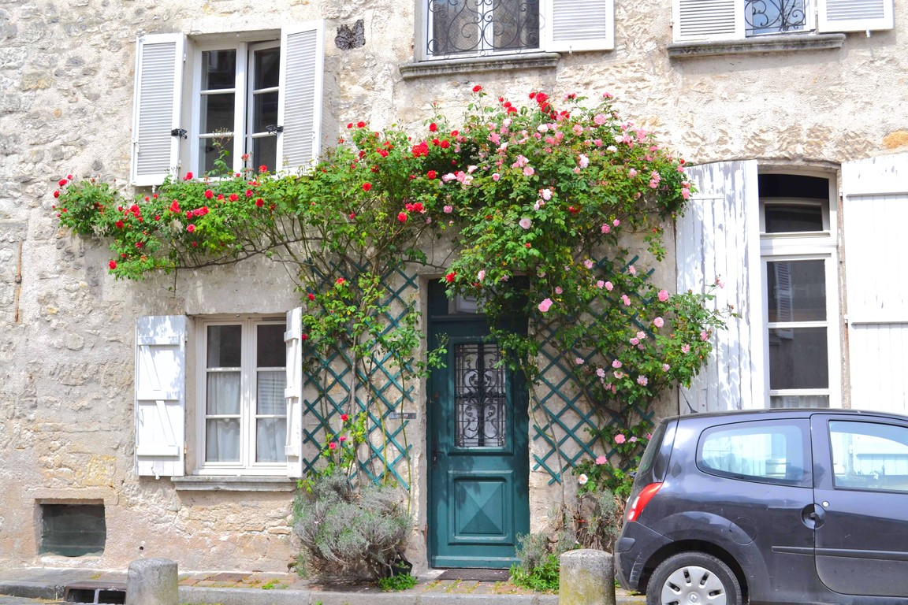
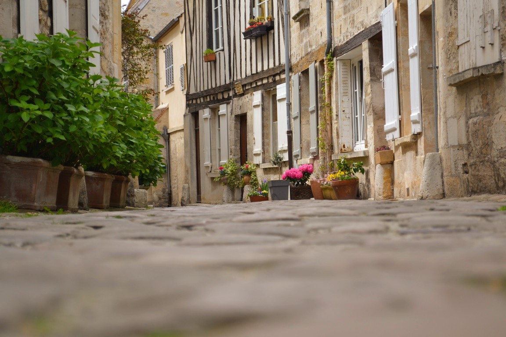
ストラスブールへはライン川対岸のドイツの街ケールから路面電車で20分ほどで行くことができる。 アルザス地方の伝統家屋が密集した旧市街地区が世界遺産に登録されている。
ところが、ドイツ側のケールに向かう電車のなかで怖いおじさんに絡まれ、 ケール駅で降りたあと逃げたりしているうちに時間がなくなってしまい、 街を落ち着いて散歩することができなかった。 フランスの治安は年々悪化の一途をたどっているがなんとかならないものか。
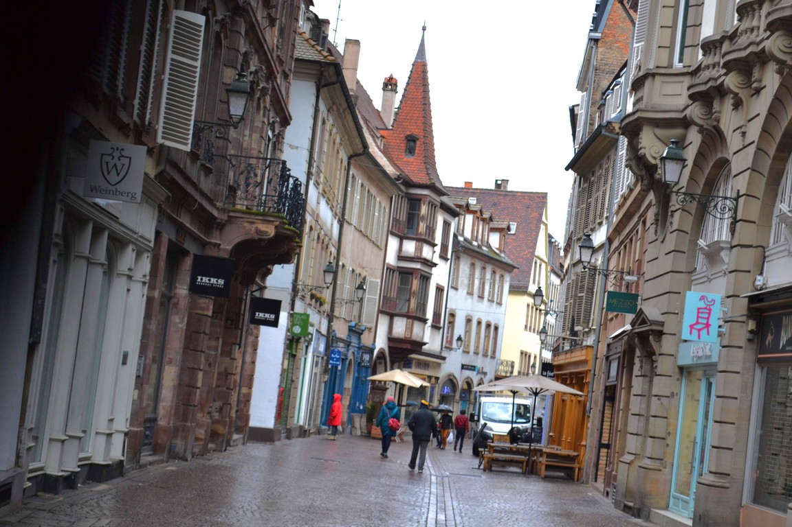
パリから北に1時間半ほどの街、アミアン。 放送大学の芸術論の講義で、 青山先生がアミアン大聖堂の前に立ってゴシック美術を解説されていたのを見て訪れてみた。 大聖堂が世界遺産。
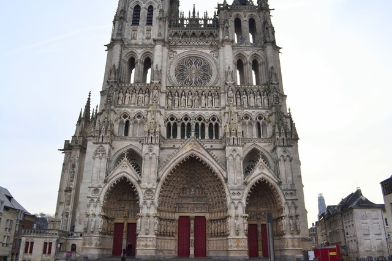
タンパンが見事。
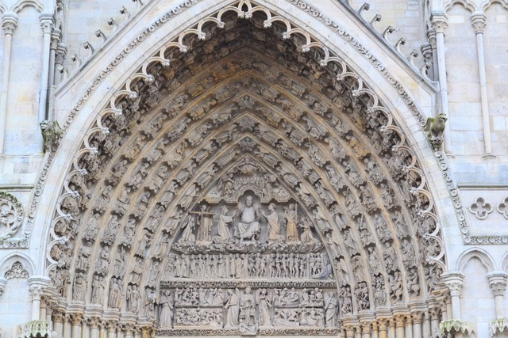
最後の審判。
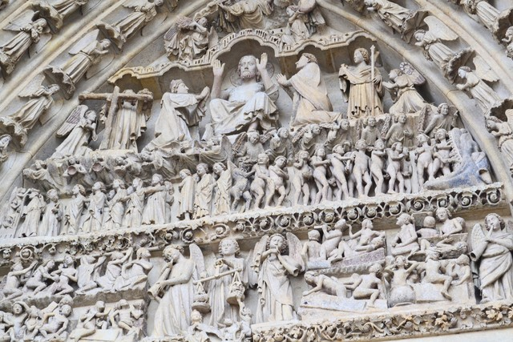
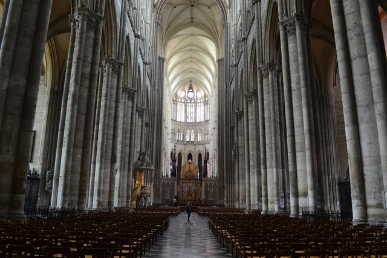
フランス国鉄（SNCF）では、電車に乗る前に駅の黄色の打刻機で切符に打刻しないといけない。 これを知らずにアミアンからパリへの電車に乗ってしまい、社内検札で20ユーロの罰金を取られてしまった。 本当に知らなかったので説明すれば許してもらえるかと思ったのだが、パリでは通用しないらしい。 あとで聞いた話だと、フランス国鉄は不正乗車による損失があまりに多く、 打刻忘れの罰金が重要な収入源のひとつになっているんだとのこと。
パリから南西に電車で1時間ほどの街。 シャルトル大聖堂は世界遺産に登録されている。
左右の塔で建築様式が異なっている。左側がゴシック様式、右側がロマネスク様式。
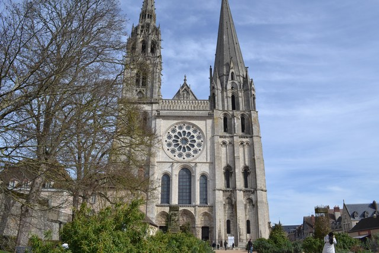
シャルトル大聖堂で有名なのがステンドグラスで、 その深い青みは「シャルトルブルー」と呼ばれ、13世紀のステンドグラスの極点とされている。 絶妙な色合いが大変美しい。
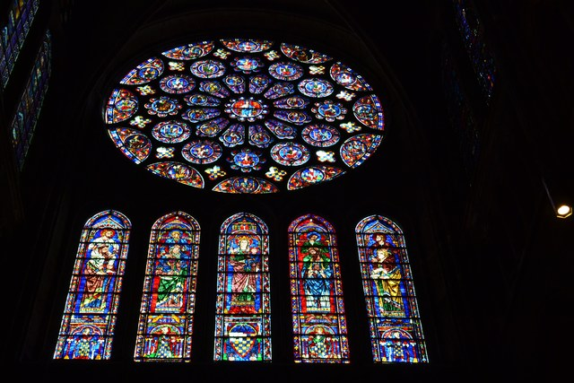
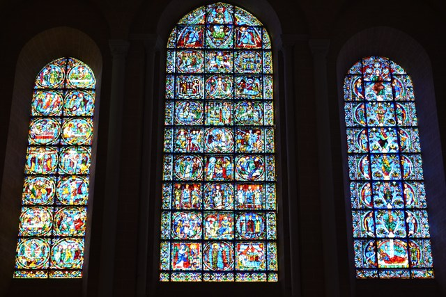
シャルトル大聖堂には美しいステンドグラスがたくさんあるのだが、 正確には、「シャルトルブルー」と言われるのは「エッサイの根」を描いたこちらのステンドグラスの青み。
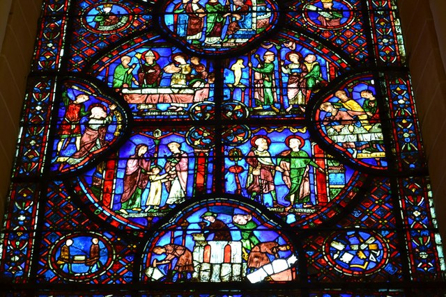
シャルトルは街並みも美しい。中世の面影がよく残されている。
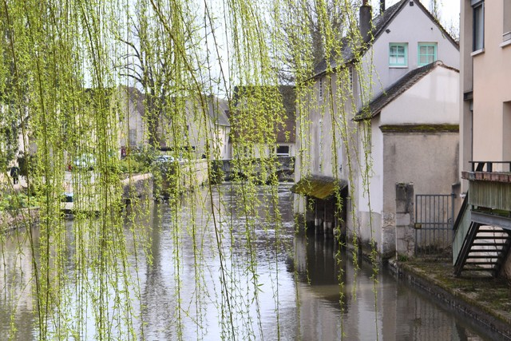
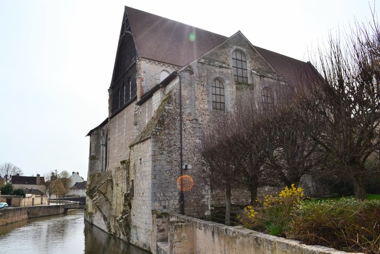
パリから電車で1時間ほど、中世市場都市として世界遺産に登録されているプロヴァン。 中世の街並みと城跡が残り、ところどころ朽ち果てた城壁が時間の重みを感じさせてくれる。
この日は雨だったが、雨に濡れる石畳の裏路地が素晴らしい。
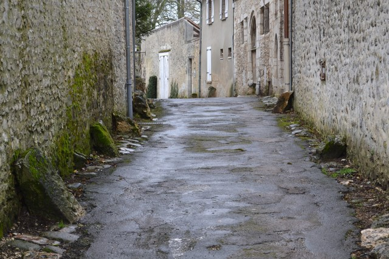
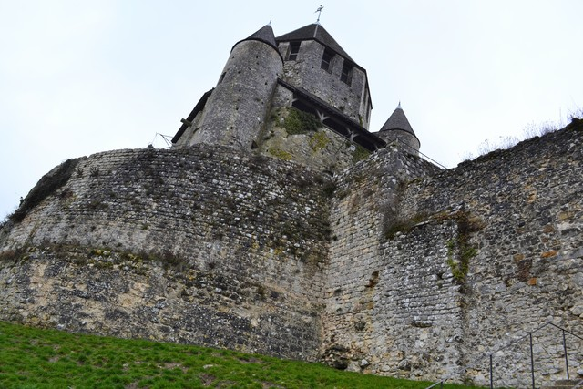
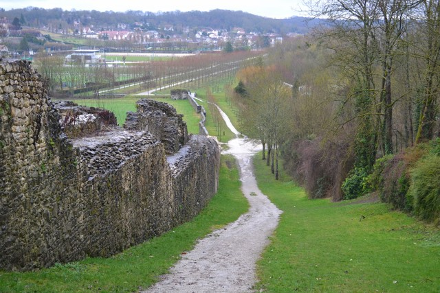
このあと雨脚が強まってきて、雨宿りのためにレストランに駆け込んだ。 基本的に街のパン屋さんめぐりが好きなのでレストランにはめったに入らないのだが、このときはやむをえなかったのだ。 伝統的なフランスの地方料理をいただいた。高級なフレンチとは違う趣がありとてもおいしかった。
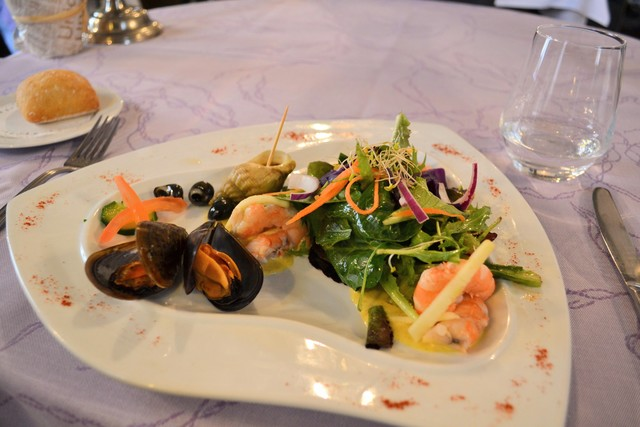
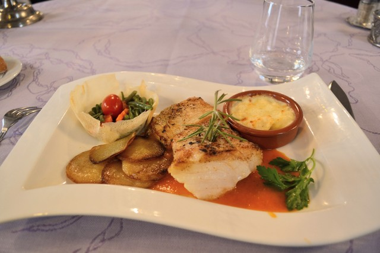
ここは観光都市だ。
ノートルダム大聖堂のタンパン。
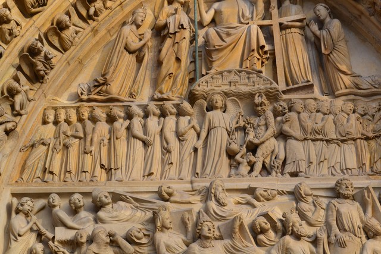
夕暮れ時の凱旋門。
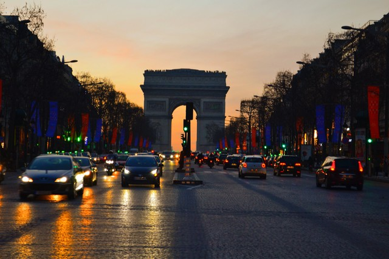
ルーブル美術館。ルーブル美術館はとても広い。 芸術の知識が不足していて、ああきれいだなぁという以上の感想が持てず、 芸術を楽しむためにはそれ相応の勉強が必要なんだと実感した日だった。 唯一、ディドロの芸術批評についてだけは放送大学の青山先生の講義をかじって学んでいたので、 ディドロの展示はじっくり楽しむことができた。 ディドロの肖像画。
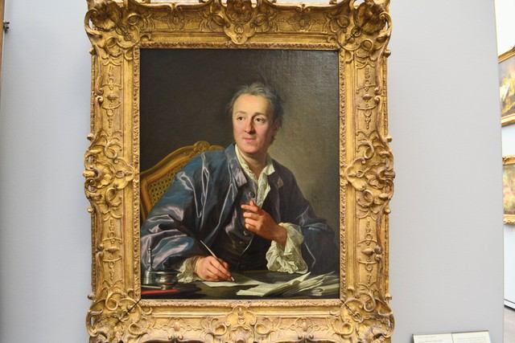
パリでいちばん楽しかったのはバゲットめぐり。 おいしい店のバゲットは究極的においしい。 有名店を8店舗ほど食べ歩いたのだが、ダントツでおいしいと思ったのは Le Grenier a Pain（Abbesses通り店）のバゲット。 小麦の香りが非常に強く、甘味も奥深い。これまで食べたバゲットのなかで最高のものだと思う。 こんなバゲットをいつか焼き上げてみたいものだ。
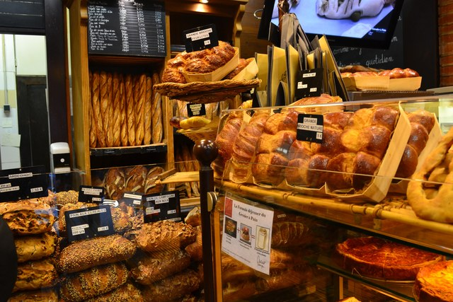
Poilaneの本店。田舎風のライ麦カンパーニュといえばこのお店。
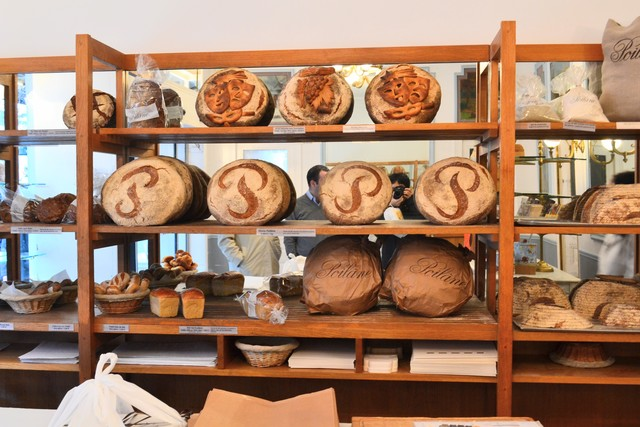
Du Pain et Des Idees。ここのパンも究極的においしい。 有名なのは長時間発酵・高加水の「パン・デ・ザミ」。 東京・青山にオープンしたデジデで食べたときはいまいちかと思ったのだが、本場の「パン・デ・ザミ」は究極。
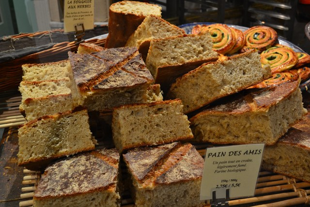
その他、「そのへんのパン屋さん」にも何軒か入ってみたがいまいちだった。 どのパン屋さんのパンもそれぞれに個性があっておいしい南ドイツに対して、 パリのパン屋さんは、ごく一部の名店だけがコンテストで競争するうちに究極的においしくなった、そんな印象を受けた。
Webの標準化を議論するTPACの会議がリヨンであった。 リヨンといえば、「星の王子さま」や「夜間飛行」で有名なサン・テグジュペリの故郷だ。 日本を出発する前に、「星の王子さま」を読みなおしてみた。 中学校の頃に読んだときとはずいぶん違った印象を抱いたのは不思議だ。 よい物語とはそういう物語なのかもしれない。
リヨンの歴史地区は世界遺産に登録されている。
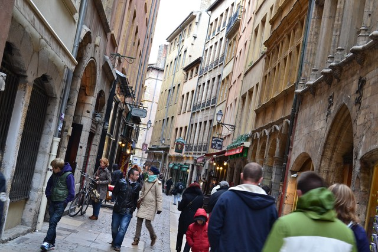
リヨンの丘を上ったところにある、古代ローマ劇場。
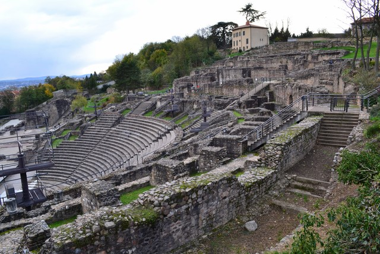